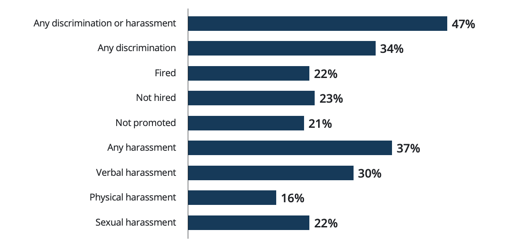
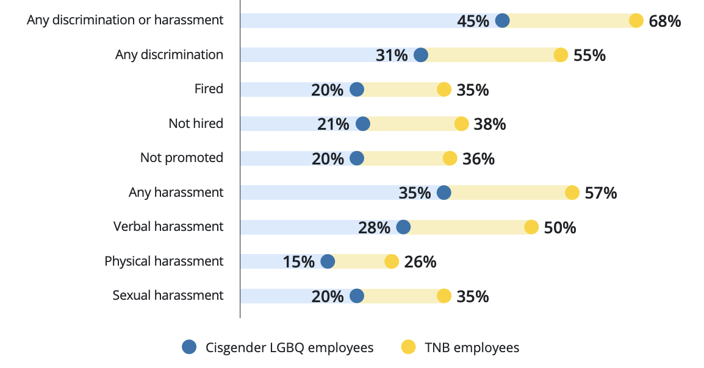
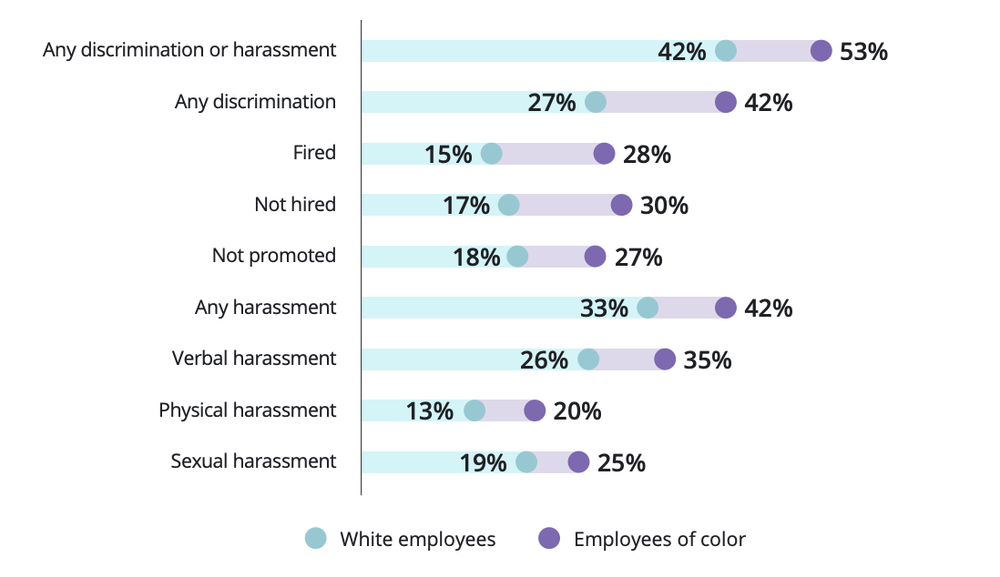
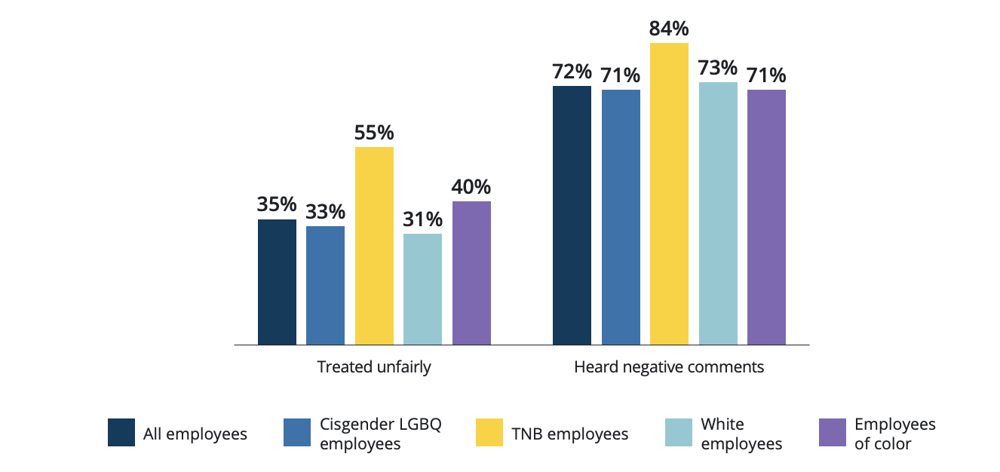

Workplace Discrimination
Are LGBTQ and gender-nonconforming people subjected to more workplace discrimination and harassment in comparison to their heterosexual and cisgender peers?
LGBT & Sexual Orientation Discrimination | CA Law Explained by a Lawyer
Statistics on Lifetime Experiences of Discrimination and Harassment
Lifetime experiences of discrimination and harassment based on LGBTQ+ status among LGBTQ+ employees
47% of LGBTQ+ employees have faced employment discrimination or harassment due to their sexual orientation or gender identity. This includes being fired, not hired, or not promoted, as well as verbal, physical, or sexual harassment. 34% reported experiencing job-related discrimination, with 21% being fired, 23% not hired, and 22% not promoted. Similarly, 37% reported workplace harassment, including 30% verbal, 16% physical, and 22% sexual harassment.
Lifetime experiences of discrimination and harassment based on LGBTQ+ status among LGBTQ+ employees by gender identity
Transgender and nonbinary (TNB) employees reported higher rates of discrimination and harassment due to their sexual orientation or gender identity compared to cisgender LGBTQ+ employees (68% vs. 45%). 55% of TNB employees experienced discrimination, such as being fired (35% vs. 20%), not hired (38% vs. 21%), or not promoted (36% vs. 20%). Similarly, 57% of TNB employees faced harassment, including verbal (50% vs. 28%), physical (26% vs. 15%), and sexual harassment (35% vs. 20%).
Lifetime experiences of discrimination and harassment based on LGBTQ+ status among LGBTQ+ employees by race/ethnicity
LGBTQ+ employees of color reported higher rates of workplace discrimination and harassment due to their sexual orientation or gender identity as compared to white LGBTQ+ employees. They were also more likely to face discrimination (42% vs. 27%), including being fired (28% vs. 15%), not hired (30% vs. 17%), or not promoted (27% vs. 18%). Harassment rates were also higher (42% vs. 33%), with verbal (35% vs. 26%), physical (20% vs. 13%), and sexual harassment (25% vs. 19%) more commonly reported.
Experiences of being treated unfairly based on LGBTQ+ status and hearing negative comments among LGBTQ+ employees by gender identity and race/ethnicity
Many LGBTQ+ employees reported unfair treatment at work due to their sexual orientation or gender identity, with 35% experiencing this issue. Rates were higher among TNB employees (55%) and LGBTQ+ employees of color (40%) compared to cisgender LGBTQ+ (33%) and white LGBTQ+ employees (31%). Additionally, 72% of LGBTQ+ employees heard negative comments, slurs, or jokes about LGBTQ+ people at work, with TNB employees reporting this more often than cisgender LGBTQ+ employees (84% vs. 71%).